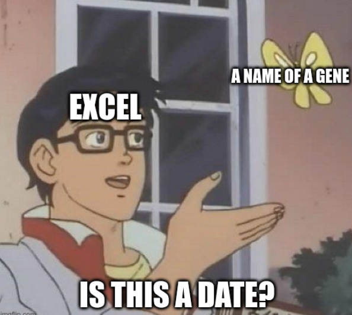

Conclusion
You Made It!
Congratulations, you made it to the end of the book! Now you know all of the R fundamentals that I wish I had learned when I was an undergraduate working on my first research project. You may not feel like an ‘expert’ yet. However, take a moment to reflect on everything that you’ve accomplished by working through this book. Seriously, sit down with a pen or pencil and paper and try to make a list of everything you’ve learned. This is an important self-reflection exercise. You will hopefully surprise yourself to see how much you have learned in such a short time!
Okay, now I’ll try. First, you learned how to program in the command line by typing commands into the R Console in R Studio to produce an output. That alone is a major hurdle for many biologists! But you went even further, perhaps confronting hesitation or self-doubt about your ability to work with mathematical equations. You’ve learned how to translate equations into code, from simple addition, subtraction and multiplication to specific functions for the absolute value, square root, log, average, variance, and others. More importantly, you’ve learned the principles of coding that allow you to translate just about any equation into your very own custom R function. You got tied up with brackets, and brackets within brackets, within brackets to code more complicated equations.
You learned all about data frames (i.e. flat data or 2-dimensional data) and all the useful functions from the dplyr library, like sub-setting, joining, sorting, grouping, and summarizing. You may not realize it, but this taught you how to work with relational data. Maybe you don’t call it this, but relational data are just data that relate to each other, which you learned to do with dplyr and join_. This is not much different than what advanced coders and data scientists do with large database protocols like Hadoop or SQL. These lie at the heart of user-friendly web tools for interacting with large online databases you may be familiar with, like Climate Data Online (CDO), the Global Biodiversity Information Facility (GBIF), or the many genetic and genomic databases maintained by the European Molecular Biology Laboratory (EMBL) and the National Center for Biotechnology Information (NCBI).
You learned how to use logic operators with flow control and dplyr commands to string your functions together into an automated and reproducible workflow. You even learned how to write your own custom functions!
You learned how to work with naughty data, like missing values, mis-coded entries, and dates. Oh man, dates probably caused you so many problems until you leaned how to deal with them in R. You will never, ever, ever, work with dates in Microsoft Excel, if you can help it!

You ventured into the intimidating yet enchanting world of regular expressions. Once you start looking for opportunities to use regular expressions, you will start to see them in just about every data project you have, whether you are pulling out data with specific characteristics, or reformatting database entries by those who don’t understand the importance of strict data encoding practices. It’s unlikely you’ve masted regular expressions, especially if this was the first time you were exposed to these powerful spells. You just need to practice. The ability to code regular expressions will come with practice, which will enhance your power to help others and bring good to the world, not unlike the Expecto Patronum.
You learned everything you need to know to produce professional, publication-worthy visualizations of your data. You learned about important graphical concepts like data formats and colour palettes for publishing, and the layered ‘grammar of graphics’ philosophy. Even better, you learned how to wrap it all together in a reproducible and professional report with R Markdown.
Above all, you leaned how to embrace mistakes and troubleshoot your coding problems.
Although you have learned a lot, it’s natural to feel confused or unclear about some of the concepts and techniques you have encountered. In many cases, you may not yet be aware of your knowledge gaps.
That’s okay! You are now, officially, a real, bona fide coder. Coding for research is a lifelong learning process, and you will continue to encounter new challenges and opportunities to learn new tricks and techniques as you progress along your coding journey. You didn’t just learn how to code, you learned how to learn how to code. And, you deserve a massive, giant congratulations!
Sure, you have much to learn, but so does everybody else. Maybe you’ll meet a coder with a degree in computer science and a decade of experience coding for a major tech corporation. They will understand coding better than you, but you’ll probably be able to discuss coding better than they can discuss biology. Don’t get intimidated. Embrace the journey, not the destination.
What Next?
Where do you go from here? First, treat yourself. Maybe a vacation, or at least a dessert? You deserve it.
Don’t ever doubt that you are now a competent coder. You have a lot to learn, but don’t have to wait until you feel like an ‘expert’ to put your skills to good use. Look for opportunities to write and proofread code to hone your skills.
If you found that this book suited your learning style, then you might want to check out some of the other books and resources that we are developing.
EcoEvoGeno.orgis our main, public-facing website and it contains links to our latest book releases as well as general information about our research and lab activities.ColauttiLab.github.iois our training ‘resources’ website, with a variety of advice and helpful links for new and established researchers. It’s directed at the graduate students in our lab, but many of these resources may be useful to you.github.com/ColauttiLabis our github page, where you can search our repositories to see what we are currently working on.R STATS Crash Course for Biologists is the next book in this series. If you are going to work with biological data in R, then you probably will want to learn how to run statistical models. The R STATS Crash Course for Biologists covers this, from the most basic ANOVA and linear regression to advanced Generalized Additive Mixed Effects Models.
The third book planned in this series, or possibly published by the time you read this, is R Machine Learning Crash Course for Biologists. Once you understand statistical models, the R Machine Learning Crash Course for Biologists will guide you through common supervised and unsupervised machine learning models, including a deep-dive into the Principal Components Analysis (PCA) mentioned briefly in the R Fundamentals Chapter. In addition, you’ll learn how to run Regularized Discriminant Analysis, Support Vector Machines, and Decision Trees to make predictions.
The fourth book planned is Bioinformatics Crash Course for Biologists which adds training in Python and Unix for high-performance computing, and then focuses on specific applications in bioinformatics like genome assembly and annotation, gene expression analysis, microbiome analysis, and population genetics.
If you have any thoughts you would like to share, good or bad, please get in touch. If you have criticisms, please send them to me so that we can improve future editions of the book. You can find up-to-date contact information on our lab website: https://EcoEvoGeno.org
Support Open & Accessible Science
If found this book helpful, please consider supporting us. We work hard to keep the cost low for our printed versions and the proprietary electronic versions (e.g. Kindle, Kobo, Apple, Google). Rather than pay publishing cartels or professional editors, all of the proceeds from these versions support graduate students to help make new content available, including translations to other languages and beta testing new tutorials for future books.
Our team is passionate about demystifying math and coding for biologists, and we want to make these skills more accessible to the next generation of biologists, empowering students of all backgrounds and historically under-represented groups in particular.
If you would like to support us, please consider buying a copy to gift to a friend or colleague, if it is within your means. If your budget is tight, then please consider posting a thoughtful and supportive review on Amazon, Barnes & Noble, Apple Books, Google Play Books, or wherever you read this. A positive review will help others to find the book, which will help to build our small community of biology coders. If you aren’t comfortable posting a 5-star review, please contact us to let us know what we can do to bring the next iteration of this book up to your standards.
As you develop your coding skills, consider making recommendations to help improve our books. The most efficient way to do this is by posting an issue in Github. Alternatively, you can find up-to-date contact information on our lab website.
As you continue on your journey, remember that learning to code is different from most biology that you’ve learned. To really learn to code, you must continue to immerse yourself, study, read, try something new, fail, correct, and repeat. And of course: practice, Practice PRACTICE!
Picture a Coder
Thinking back on what I’ve learned in coding in R, Python, and Unix since 2009, one thing sticks out as particularly helpful for solidifying my understanding of code: helping others. This book began as a series of self tutorials to teach coding to biologists. This came on the heels of helping with full-day coding workshops with what is now called the Centre for Advanced Computing at Queen’s University. It continues all the way back to my experience as a graduate TA helping with statistics, and offering help to other graduate students who were new to R. All of these experiences helped to reveal my own knowledge gaps and offered opportunities to practice my skills. If you found this book helpful, and you want to continue to develop your skills, this is the best advice I can offer: Pay it forward.
Please share your knowledge and experiences with others. As you continue to learn and explore R programming, consider sharing your insights and discoveries with your peers and colleagues. This will help to build a supportive community, and you will probably find that helping others helps you hone your own skills.
Let us conclude by reviewing your answer to the preface of this book when you were asked to Think of a computer programmer or data scientist.
Question: What does a computer programmer look like?
Can you picture yourself in that role? If you completed this book, you should!